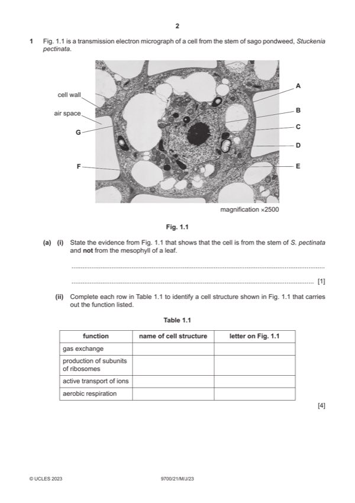

Question 1

Original paper page 2
Part 1(a)(i) — solution
any one from: 1
no chloroplasts (present) ;
presence of (many) small vacuoles / no large vacuole / no central vacuole ;
central nucleus
or
nucleus not located at the, edge / periphery ;
Mark points
- Include the ideas shown in the solution above.
Part 1(a)(ii) — solution
one mark per row ;;;; 4
If 0 marks, allow 1 mark if name of cell structure column completed correctly
function name of cell structure letter on Fig.1.1
gas exchange cell surface membrane A
I phospholipid bilayer
mitochondrial membrane(s) E
production of subunits of ribosomes nucleolus / nucleoli C
active transport of ions cell surface membrane A
ecf for cell membrane
or
tonoplast / vacuolar membrane F
or
mitochondrial membrane(s) E
or
nuclear envelope B
A nuclear membrane(s)
aerobic respiration mitochondrion / mitochondria E
Mark points
- Include the ideas shown in the solution above.
Part 1(b)(i) — solution
endocytosis / pinocytosis ; R phagocytosis 1
2023 Page 8 of 18
9700/21 Cambridge International AS & A Level – Mark Scheme May/June 2023
Mark points
- Include the ideas shown in the solution above.
Part 1(b)(ii) — solution
any three from: 3
Mark points
- Include the ideas shown in the solution above.
Part 1 — solution
hydrolysis / use water to break bonds ; A ref. to hydrolytic enzymes
Mark points
- Include the ideas shown in the solution above.
Part 1(c) — solution
1 formation of phagolysosomes / described ; 2
A fusion with, phagosomes / phagocytic vesicle or vacuole
Mark points
- Include the ideas shown in the solution above.
Part 1 — solution
glycogen is a store of, energy / glucose ;
R produces energy
Mark points
- Include the ideas shown in the solution above.
Part 1 — solution
unbranched (polymer) / straight chain / linear ;
Mark points
- Include the ideas shown in the solution above.
Part 1 — solution
grapes will, be sweeter / have improved taste ;
Mark points
- Include the ideas shown in the solution above.
Part 1 — solution
(group / clone of) T-lymphocytes have receptors complementary to an antigen ;
A specific T-lymphocytes have receptors to an antigen
Mark points
- Include the ideas shown in the solution above.
Part 1 — solution
addition of, activated / phosphorylated, nucleotides ;
Mark points
- Include the ideas shown in the solution above.
Part 1 — solution
(wall is) thin / one cell thick / 1–2 m in thickness ;
R ‘thin cell wall’
I tunica intima
Mark points
- Include the ideas shown in the solution above.
Part 1 — solution
more carbon dioxide diffuses into red blood cells ;
Mark points
- Include the ideas shown in the solution above.
Part 1 — solution
hydrogencarbonate ions / HCO3- , pass out of red blood cells (into the plasma to increase concentration in
deoxygenated blood) ;
Mark points
- Include the ideas shown in the solution above.